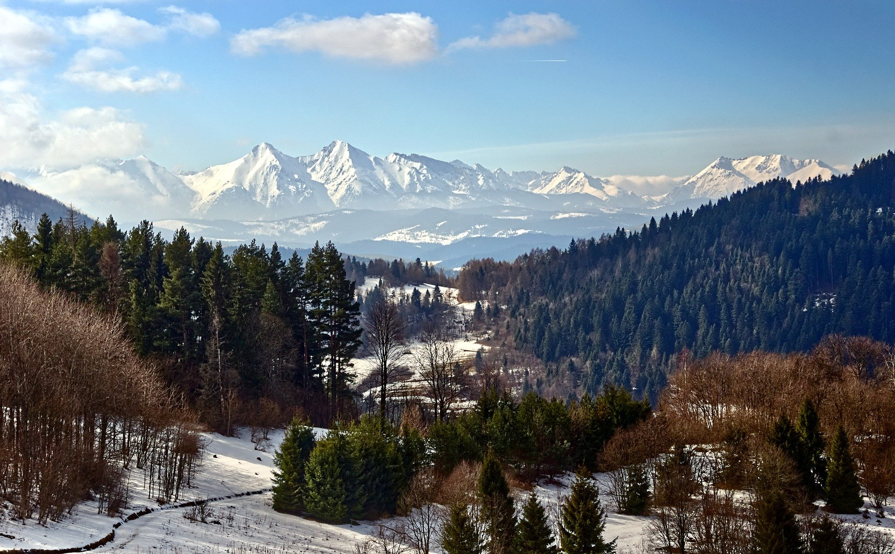
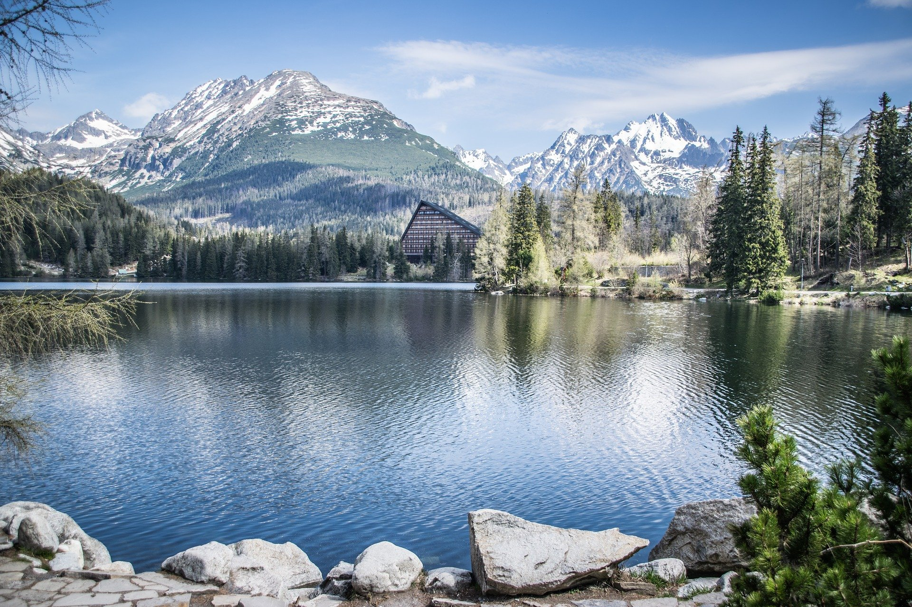

{kind=link}


PARKI NARODOWE W POLSCE
TATRZAŃSKI PARK NARODOWY

Historia
W 1868 Wysoki Sejm Galicyjski uchwalił ustawę „względem zakazu łapania, wytępiania i sprzedawania zwierząt alpejskich, właściwym Tatrom, świstaka i dzikich kóz”. Ustawa należała do pierwszych tego rodzaju norm w Europie[6]. Do jej egzekwowania utworzono straż myśliwską w osobach dawnych kłusowników: Jędrzeja Wali i Macieja Sieczki, którzy porzucili kłusownictwo i stali się zagorzałymi strażnikami przyrody tatrzańskiej. Utworzone w 1873 Towarzystwo Tatrzańskie rozszerzyło ochronę także na niektóre rośliny: szarotkę alpejska, cisa i limbę. Z jego też inicjatywy utworzono Towarzystwo Ochrony Tatr Polskich, które rozpoczęło zbiórkę pieniędzy na wykup Tatr z rąk prywatnych i utworzenie parku narodowego. Wykupiono ok. 1000 ha.
Wykup prowadził też Skarb Państwa. W 1932 wykupił ponad 900 ha, a w 1933 ok. 9000 ha Fundacji Kórnickiej[3]. Przedsięwzięcie tworzenia parku narodowego zahamowali technokraci, dla których park był przeszkodą w rozbudowie infrastruktury turystycznej[5], mimo to, zarządzeniem Ministra Rolni
ctwa i Reform Rolnych
z dnia 26 czerwca 1939 r. utworzono szczególną jednostkę organizacyjną Lasów Państwowych „Park Przyrody w Tatrach”, w celu „utrzymania tatrzańskiej flory i fauny oraz ochrony wszelkich innych form przyrody ze względów naukowych, estetycznych, historycznych, pamiątkowych”[7].
Po II wojnie światowej kontynuowano starania w celu utworzenia w Tatrach parku narodowego. Znacjonalizowano własność rodziny Uznańskich obejmującą ponad połowę polskich Tatr. W 1947 na tym terenie minister leśnictwa utworzył obszar ochronny o nazwie Tatrzański Park Narodowy, rok później w górnej części Doliny Kościeliskiej na terenach wykupionych jeszcze przed II wojną światową przez Skarb Państwa utworzono rezerwat ścisły o nazwie rezerwat przyrody Tomanowa-Smreczyny. W 1954 utworzono Tatrzański Park Narodowy (TPN), włączono w jego obszar także własność Wspólnoty Leśnej Uprawnionych Ośmiu Wsi (doliny Chochołowska i Lejowa).
Na utworzenie parku narodowego polskie Tatry musiały czekać sześć lat dłużej niż Tatry Słowackie. Ochroną parkową objęto wówczas cały obszar górski i otulinę na Podhalu. W chwili utworzenia parku Tatry były zdewastowane, liczebność dzikich ssaków była niska, a drzewostan był w opłakanym stanie[5].
{kind=link}